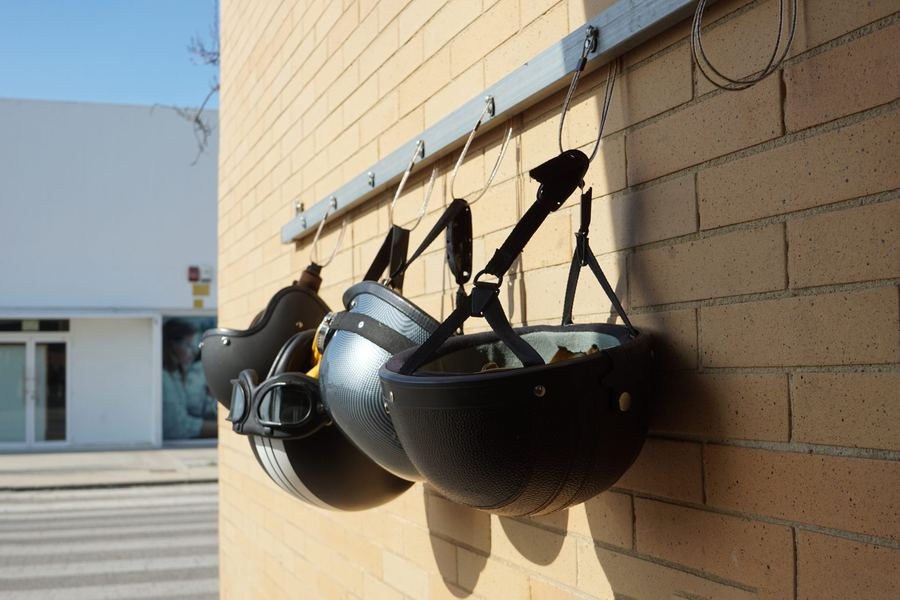
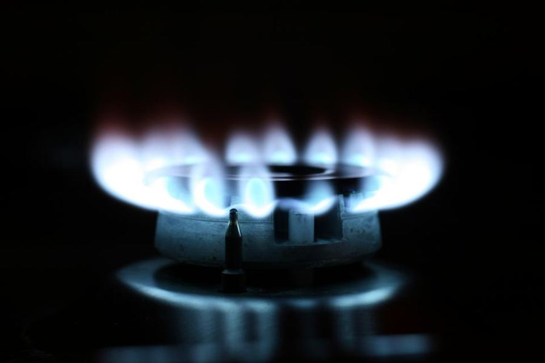
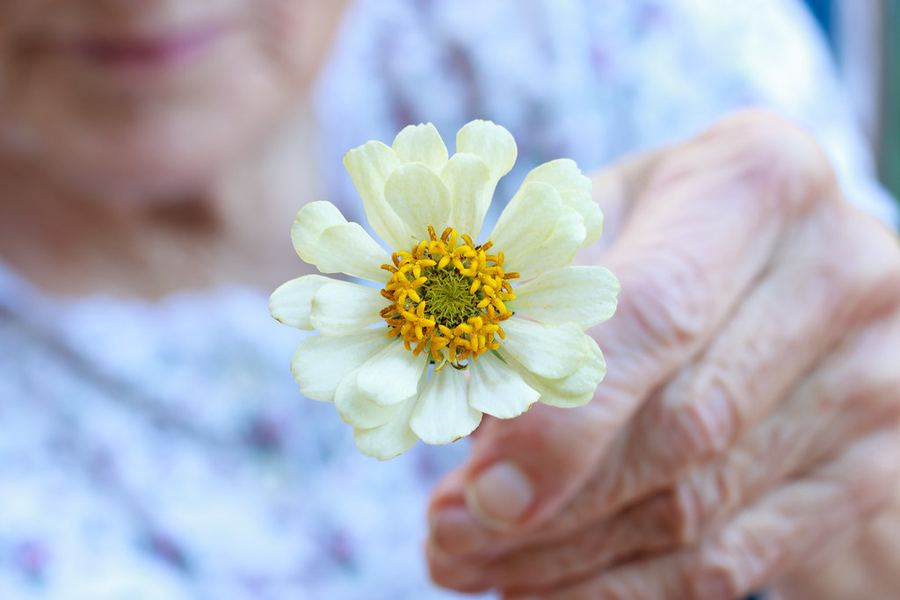
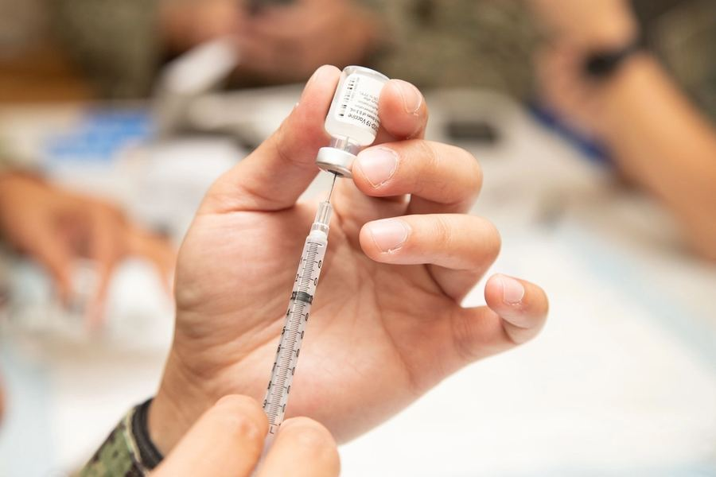
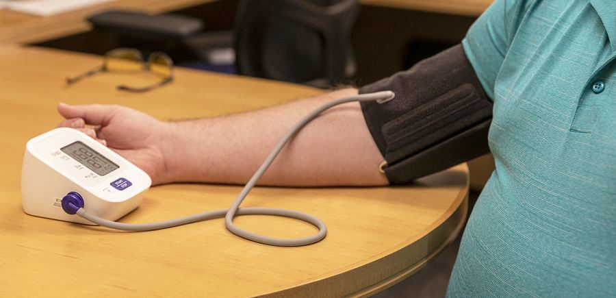
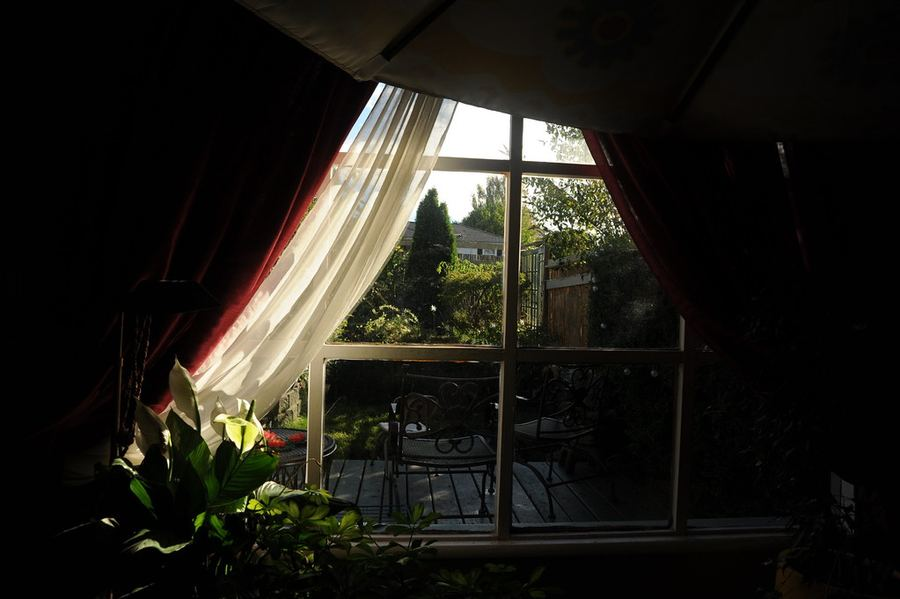

第 1 條前座後座，都把安全帶繫上
上車那兩秒鐘的「喀」一聲，是你能給自己最便宜的保險。
- 花費幾乎不用
- 時間一下子
- 毅力不太需要
- 收益換回壽命・大
坐在小客車前座，繫上安全帶能讓車禍時受致命傷的風險降低約 45%；輕型卡車前座更能降低 60%。美國 2022 年死在車裡、而且查得到有沒有繫安全帶的人，有一半沒有繫。世界衛生組織的說法是：安全帶最多能讓車內的人死亡風險減半。
第 1 篇 · 原書「不要早死」
意外、疫苗、篩檢與身體的警訊
大部分的早逝，不是命運，而是一連串「本來可以避開」的小事。繫上安全帶、裝一顆警報器、抽一管血、打一劑疫苗——這些事花的錢不多，卻能把我們留在所愛的人身邊久一點。這一篇整理了證據最紮實、最划算的保命動作。

出門與回家之間，幾個小習慣就是最可靠的護身符。

坐在小客車前座，繫上安全帶能讓車禍時受致命傷的風險降低約 45%；輕型卡車前座更能降低 60%。美國 2022 年死在車裡、而且查得到有沒有繫安全帶的人，有一半沒有繫。世界衛生組織的說法是：安全帶最多能讓車內的人死亡風險減半。
把多項研究合起來算：騎機車戴安全帽，出事時死亡風險低約 42%，頭部受傷低約 69%。重點在扣環——鬆鬆掛在頭上，一撞就飛出去，跟沒戴差不多。
平均車速每快 1%，致命車禍的風險就高約 4%。酒精沒有「喝一點沒關係」的安全線。美國一項研究在 3,500 多位駕駛的車上裝攝影機，拍下 905 起車禍後發現：手拿手機操作時，出事機率是專心開車的 3.6 倍；撥號時 12.2 倍、打字 6.1 倍、伸手拿手機 4.8 倍；明顯在打瞌睡的是 3.4 倍。世界衛生組織提醒，用免持聽筒也沒有安全多少。
台灣在地補充（改寫時查證，請以主管機關最新公告為準）
使用安全座椅，能讓 1 歲以下的嬰兒在車禍中受致命傷的風險下降 71%，1 到 4 歲的幼兒下降 54%。抱在懷裡沒有這種效果：撞擊時的力道遠遠超過大人手臂能承受的程度。
家應該是最安全的地方，前提是我們先替它把關。

美國北卡羅來納州的研究發現：家裡有一個能正常運作的煙霧警報器，火災死亡風險低約六成。美國 2018 到 2020 年有人喪命的住宅火災，24% 家裡沒有警報器，41% 起火時人正在睡覺。一氧化碳無色無味，人聞不到，只能靠警報器替你發現——原書引用的中國資料顯示，2018 年有 11,523 人死於一氧化碳中毒，冬天那幾個月約七成死在家裡。
台灣在地補充（改寫時查證，請以主管機關最新公告為準）
連接爐具的瓦斯軟管會老化、龜裂，到了使用年限就該換；自己改管路、拆瓦斯表都非常危險。原書引的法規也寫明，瓦斯公司不能強迫用戶買指定的產品，所以上門說「一定要換」的推銷可以拒絕。
真的聞到瓦斯味：先關總開關（桶裝瓦斯關鋼瓶開關），再打開門窗通風。電燈、抽油煙機、排風扇一律不要開也不要關，打火機別碰。人先撤到屋外，再打電話求救。
中國官方統計，2021 年電動自行車火災 1.8 萬起、65 人死亡；其中發生在建築物裡的 3,782 起就造成 60 人死亡，死者幾乎都在室內。鋰電池起火後，幾十秒內就會猛烈燃燒，同時冒出有毒濃煙。車停在樓梯間或走道，一燒起來正好堵住大家逃生的路。中國 2024 年大力整治後，火災件數比前一年少了 42.2%，傷亡少了九成以上。
原書引的家庭應急物資清單裡：滅火器和滅火毯用來撲滅剛起的小火，滅火毯也可以披在身上逃生；過濾式逃生面罩用於火場逃生；外傷用品（止血粉、紗布、繃帶）用來處理傷口。Cochrane 統合 98 項研究、260 多萬人發現：到府進行的居家安全指導，能讓傷害發生率低約 25%。
台灣在地補充（改寫時查證，請以主管機關最新公告為準）
手提砂輪機（中國稱「角磨機」）轉得極快，砂輪片碎裂會飛出來傷人，裝上木工鋸片還會突然反彈。中國有兩起事故都是裝了鋸片、拆了護罩：一人割斷大腿動脈、一人割破頸動脈，都沒能救回。
安全的做法：開機前檢查護罩和砂輪片有沒有裂痕、缺角；砂輪片標示的最高轉速不能低於機器轉速，尺寸要相符；換片前先拔插頭；工件先固定好；戴護目鏡再加面罩；雙手握住兩個把手、站穩；切割片不能拿來研磨；砂輪片完全停下前不要放下機器。
化糞池、人孔、汙水池、地窖這類空間會累積毒氣（例如硫化氫）或缺氧，人可能幾秒鐘就倒下。中國的統計顯示，這類事故近 80% 是因為盲目救人讓傷亡擴大，死在裡面的人超過一半是下去救人的；2019 年東莞一家紙廠，3 人吸入硫化氫昏倒，6 人接連下去救，最後死了 7 人。美國的調查也發現，這類事故約六成的死者是想去救人的人。
台灣在地補充（改寫時查證，請以主管機關最新公告為準）
最需要被保護的人，往往也最不會開口提醒我們。

紐約市從 1972 年起推動「孩子不會飛」計畫，在高風險社區免費裝窗戶護欄、上門宣導，布朗克斯區通報的兒童墜落三年內少了一半。後來紐約乾脆修法，要求房東替家裡有 10 歲以下孩子的公寓裝護欄。美國的急診資料也顯示：大多數墜落發生在 6 歲以下的孩子，而且多半是二樓或更低的地方。
用美國海岸防衛隊資料做的研究發現：休閒划船落水時，有穿救生衣的人溺死風險大約只有沒穿的一半。原書引用的中國資料顯示，溺水仍是 1 到 14 歲孩子的頭號死因；15 到 19 歲的男生溺水死亡率最高，農村約是城市的兩倍。
台灣在地補充（改寫時查證，請以主管機關最新公告為準）
每週練 2 到 3 次、每次約 30 分鐘的平衡訓練（像是太極拳），長輩跌倒的次數少 23%，跌倒過的人數少 15%；練太極拳的跌倒風險低約 29%。請專人到家裡評估、改善環境，跌倒次數也能少約兩成。原書提到，中國 2018 年監測到的長者跌倒，有 55.97% 發生在自己家裡。
台灣在地補充（改寫時查證，請以主管機關最新公告為準）
光是 2025 年，中國疾控中心就調查了 828 起毒菇中毒，2,165 人受害、13 人死亡，那一年還新發現 34 種過去沒有紀錄會毒人的菇。「顏色鮮豔才有毒」「被蟲咬過的就沒毒」「銀針變黑就有毒」「高溫油炸能去毒」——這些說法全部不成立。官方的結論只有一句：目前沒有簡單、快速又可靠的方法能分辨菇有沒有毒。
放射源通常是封在小金屬殼裡的一小塊固體，工業用的料位計、非破壞檢測機、醫院的加馬刀裡都有。一般人碰上的機率極低，每年每萬枚放射源出事不到 1 起；但一旦碰上，後果非常嚴重。1987 年巴西戈亞尼亞，有人把廢棄診所的放射治療機拆開取出銫-137，最後 4 人死亡、249 人受到污染。2014 年中國南京，一名倉庫管理員把探傷作業遺失的銥-192 放進工作服口袋，住院治療一年，幾年後仍要拄雙拐走路。
台灣在地補充（改寫時查證，請以主管機關最新公告為準）
中國官方的說法是冰厚 15 公分，成年人才能上去溜冰；美國、加拿大的底線是 10 公分，而且只算新結的透明冰。積雪融了又凍上的白色冰，強度只有透明冰的一半左右，厚度要加倍才夠。同一片水面，這裡一呎厚，幾步外可能只有一兩吋；流動的河面、橋和涵洞附近、靠岸的冰都特別危險。
泡太久的木耳、白木耳，放太久的濕米製品（粿條、河粉、腸粉），以及自家發酵的玉米麵製品，可能長出一種叫「邦克列酸」（舊稱米酵菌酸）的毒素。它非常耐熱，100°C 煮沸、高壓鍋都破壞不了，目前也沒有解毒劑。中國 2010 到 2020 年通報 19 起中毒，146 人發病、43 人死亡，發病的人約三成死亡。
台灣在地補充（改寫時查證，請以主管機關最新公告為準）
一劑疫苗，是替未來的自己提前做好的準備。

啟東那項試驗追蹤了 30 年：出生就打 B 肝疫苗的人，後來得原發性肝癌的機率低 84%，帶有 B 肝病毒的比例低 72%。不過 10 到 14 歲才補打的，防止帶原的效果只有 21%——越早打越有用。成年人打疫苗主要是為了「不要被感染」，不能直接套用那個 84%。
台灣在地補充（改寫時查證，請以主管機關最新公告為準）
在美國，破傷風發病後大約每 10 人就有 1 人死亡。又深又髒、沾到泥土的傷口風險最高。一般原則是：打過 3 劑以上、最後一劑不到 5 年，什麼都不用打；5 到 10 年的，高風險傷口要追加一劑；超過 10 年的，不管哪種傷口都要追加。沒打滿 3 劑或記不清楚的，要把疫苗補齊，高風險傷口可能還要再打一針直接給抗體的免疫球蛋白。
瑞典追蹤 167 萬名女性發現：17 歲以前打 HPV 疫苗的人，日後得侵襲性子宮頸癌的機率只有沒打的約八分之一（低約 88%）；17 到 30 歲才打的，也低約 53%。世界衛生組織把 9 到 14 歲、還沒有性行為的女孩列為優先接種對象。
一項 2,571 人的雙盲試驗在心肌梗塞之後進行：打流感疫苗的人，一年內的總死亡率是 2.9%，打安慰劑（不含有效成分的對照針）的是 4.9%。把多項研究合起來看，打疫苗的人主要心血管事件是 3.6%，對照組是 5.4%。
第三期試驗平均追蹤 3.2 年：打重組帶狀皰疹疫苗的只有 6 人發病，打安慰劑的有 210 人，整體保護力 97.2%，各年齡層都在 96.6% 到 97.9% 之間。缺點是打完一週內，注射部位和全身的反應比較常見：出現最嚴重一級症狀的，疫苗組 17.0%、安慰劑組 3.2%；嚴重不良事件和死亡的比例兩組差不多。
荷蘭的試驗中，13 價肺炎鏈球菌結合型疫苗對「疫苗涵蓋的菌型」引起的肺炎，保護力是 45.6%；對最凶險的侵襲性肺炎鏈球菌感染，保護力 75.0%。但對「所有原因加起來的肺炎」看不出效果——它只防疫苗涵蓋的那幾種，不是打了就不會得肺炎。
很多病在痛之前就看得見，只要我們願意先看一眼。

收縮壓（血壓兩個數字裡較高的那個）每降低 10 mmHg：心臟血管的大問題少約兩成、中風少 27%、心臟衰竭少 28%、總死亡風險少 13%。在中國 35 到 75 歲的人當中，44.7% 有高血壓，真正控制好的只有 7.2%。很多人不是治不好，而是根本不知道自己血壓高。
台灣在地補充（改寫時查證，請以主管機關最新公告為準）
美國官方建議：35 到 70 歲、體重過重或肥胖的成年人，就算沒有任何症狀，也要篩檢糖尿病前期和第 2 型糖尿病；結果正常的，每 3 年再驗一次。亞洲人在同樣的體重下比較容易得糖尿病，所以美國對亞裔把「過重」的門檻降到 BMI 23。中國 2018 年的調查中，成人糖尿病患者只有 36.7% 知道自己生病。
美國官方建議 40 到 74 歲的女性，每兩年做一次乳房 X 光攝影。至於 75 歲以上要不要做，以及乳房緻密的人要不要加做超音波或磁振造影（MRI），官方的結論是「證據不足」。健檢套餐拿這些項目加價時，可以不必買單。
印度農村的研究以 30 到 59 歲女性為對象：只做過一次 HPV 檢測，死於子宮頸癌的風險就低約 48%，被診斷出晚期子宮頸癌的風險也低約 53%。美國官方建議 30 到 65 歲的女性：單做高風險型 HPV 檢測，每 5 年一次；只做抹片，每 3 年一次。
定期做糞便潛血檢查的人，死於大腸癌的風險低約 16%，至少參加過一輪的人低約 25%。北歐的一項隨機試驗則發現：被邀請去做大腸鏡的人，10 年內得大腸癌的比例從 1.20% 降到 0.98%。
台灣在地補充（改寫時查證，請以主管機關最新公告為準）
中國山東臨朐的試驗追蹤了 22 年：做過幽門桿菌除菌治療的人，得胃癌的風險低約一半，死於胃癌的風險低約 38%。檢查方式很簡單，可以用呼氣試驗或驗糞便；除菌通常要同時吃好幾種藥、連續兩週，關鍵是把藥按時吃完。
台灣在地補充（改寫時查證，請以主管機關最新公告為準）
美國的試驗找來 55 到 74 歲、抽菸量 30 包年以上的人（包年是計算抽菸量的單位：每天一包、抽一年算一包年）。做低劑量電腦斷層（LDCT）的人，比只照胸部 X 光的人，肺癌死亡相對少 20%，總死亡少 6.7%。代價是：三年三輪檢查中有 24.2% 的結果「看起來可疑」，而其中 96.4% 最後證實是虛驚一場。
台灣在地補充（改寫時查證，請以主管機關最新公告為準）
美國官方建議：65 歲以上的女性，以及停經後、骨折風險高的女性，都要篩檢骨質疏鬆。三項試驗合起來看，先評估骨折風險、再替高風險的人驗骨密度和用藥，髖部骨折少約 17%，換算下來每 1,000 人篩檢約少 5 人髖部骨折；總死亡率看不出變化。檢查要用雙能量 X 光吸收儀（DXA）測腰椎和髖部，躺著幾分鐘就完成。
已經確診骨質疏鬆或骨折過的停經後女性，吃阿崙膦酸鈉（alendronate）能讓髖部骨折少約 51%，有症狀的脊椎骨折少約 55%。HORIZON 試驗找了 2,127 名髖部骨折開過刀的人，術後 90 天內開始每年打一次唑來膦酸（zoledronic acid），新的骨折從 13.9% 降到 8.6%，死亡從 13.3% 降到 9.6%。原書引的指南明白寫著：目前沒有足夠證據顯示單純補鈣可以取代抗骨鬆藥物。
心房顫動（簡稱房顫）是心房亂顫，血液在心房裡淤積、容易結成血塊，血塊衝進腦血管就是中風。和不吃藥相比，劑量調好的 warfarin（華法林）讓中風少約 64%，阿斯匹靈這類抗血小板藥只少約 22%。新型口服抗凝血劑和 warfarin 比，中風再少 19%、死亡少 10%、腦出血少 52%，但腸胃道出血多 25%。最常見的症狀是心悸、一動就累、胸口不舒服，也有約 25% 的人說自己沒有症狀；做一次心電圖就能確診。
台灣在地補充（改寫時查證，請以主管機關最新公告為準）
C 型肝炎靠血液傳染、沒有疫苗，常常幾十年都沒有症狀，等到不舒服時肝臟已經傷得很重。抗體陽性只代表「曾經感染」，要再驗病毒核酸才知道病毒還在不在。全口服的抗病毒新藥吃 8 到 12 週，治癒率在 95% 以上；治好的人和沒治好的人相比，總死亡率低約 60%，肝癌低約 71%。
台灣在地補充（改寫時查證，請以主管機關最新公告為準）
中國高發地區約 63.75 萬人的研究：做過一次胃鏡的人，死於上消化道癌的風險低約 57%。韓國國家篩檢計畫中，做過胃鏡的人胃癌死亡風險低約 47%，做鋇劑攝影的則看不出差別。但主動去檢查的人本來就比較注意健康，數字會偏大；校正這層偏差後，以整個篩檢計畫來算，效果就看不出來了。
身體說話很小聲，聽懂它，就不必等到它大聲喊。
英國的研究發現：60 歲以上出現肉眼看得見的血尿，最後查出膀胱癌的約 2.8%，40 到 59 歲約 1.2%。比例不算高，但已經高到值得檢查一次——就算只出現過一次、量很少、一點都不痛。只有顯微鏡才看得到的血尿，同樣有意義。英國國民保健署（NHS）的建議是：尿裡有血就要盡快看醫師，不要自己下結論。
統合 14 項研究、92,757 名男性、平均追蹤 6.1 年：有勃起功能障礙的人，之後心血管事件多約 44%，心肌梗塞多約 62%，中風多約 39%，總死亡多約 25%。年紀越輕，差距越大。
把 6 項試驗、740 名男性合起來看：改變生活方式或用藥控制心血管危險因子後，勃起功能問卷（IIEF-5，滿分 25 分，22 分以上算正常）平均進步 2.66 分；只靠改變生活方式的試驗，也進步 2.40 分。
研究對象是一方感染 HIV、一方沒有的異性伴侶：每次都用保險套的人，HIV 傳染風險比從不使用的人低約 71%，比斷斷續續使用的人低約 77%。世界衛生組織指出，正確並持續使用保險套，是預防性病（包括 HIV）最有效的方法之一；但長在保險套蓋不住部位的潰瘍，例如梅毒、生殖器皰疹，就擋不住。
現在的抗病毒治療能把病毒壓到驗不出來。PARTNER 研究追蹤 782 對同性伴侶（一方感染、一方沒有），期間共約 7 萬 6 千次沒戴套的性行為，伴侶之間的傳染是零。世界衛生組織的說法是：接受治療、病毒量驗不到的感染者，不會經由性行為傳染給伴侶（U=U，測不到＝不傳染）。所以驗出來不是世界末日，而是治療的開始。
台灣在地補充（改寫時查證，請以主管機關最新公告為準）
暴露前預防性投藥（PrEP）是在還沒感染時就先吃抗病毒藥。iPrEx 試驗的吃藥組感染少了 44%；英國的 PROUD 試驗、法國的 IPERGAY 試驗都看到感染少了 86%。統合分析顯示：按時吃藥的人超過七成的試驗，感染風險低約 70%；吃藥率不到四成的，幾乎沒有效果——關鍵就在「按時吃」。
台灣在地補充（改寫時查證，請以主管機關最新公告為準）
最難熬的時刻通常很短，請讓別人陪你一起撐過去。

一篇整理近 10 年研究的系統性回顧指出：限制人取得致命手段的效果，證據越來越強——管制止痛藥後，相關的自殺少了 43%；常有人跳下的地點加裝防護後，少了 86%。抗憂鬱藥物和心理治療也是預防自殺的重要一環。輕生的衝動往往只持續幾分鐘到幾小時，讓危險的東西離你遠一步，本身就是保護。
一項訪談 82 位自殺未遂者的研究發現：將近一半（47.6%）的人，從念頭第一次冒出來到真正行動，不超過 10 分鐘；而 76.8% 的人在那段時間裡，曾和伴侶、家人或朋友有過接觸。另一篇整理 90 項追蹤研究的回顧顯示：因自傷就醫的人，1 年後約 2% 死於自殺，追蹤 9 年以上約 7%——大多數人後來都好好活了下來。
台灣在地補充（改寫時查證，請以主管機關最新公告為準）
美國紐約州 6 所高中、2,342 名學生被隨機分成兩組，一組的問卷有自殺相關的題目、一組沒有。結果兩組的難受程度沒有差別，兩天後想過自殺的比例也沒有差別（4.7% 比 3.9%）。原本有憂鬱症狀的學生，被問了反而比較不難受；曾經自殺未遂的學生，被問了反而比較不想自殺。2022 年的一篇統合分析也確認：問了之後，自殺念頭和行為都沒有增加。
台灣在地補充（改寫時查證，請以主管機關最新公告為準）
瑞典的全國登記研究找出 2,099 名被專科診斷為「賭博障礙」（控制不了地賭、賭到影響生活）的人：和同年齡的人相比，他們的總死亡率是 1.8 倍，自殺死亡率是 15 倍（男性 12.1 倍、女性 16.1 倍）。能預測自殺的訊號是憂鬱。
台灣在地補充（改寫時查證，請以主管機關最新公告為準）
巴拉刈中毒沒有有效的解藥，孟加拉一組病人有 43.2% 沒能救回；它會讓肺部發炎、慢慢纖維化變硬，腎臟和肝臟也一起受傷。一氧化碳中毒被救回來的人，六週後只吸一般氧氣的有 46.1% 留下認知方面的後遺症，做了高壓氧治療的也還有 25.0%。急診能保住的是命，不一定保得住肺和腦。
中國新疆一家創傷加護病房統計 289 名高處墜落的病人：死亡率 5.5%，但有 47.1% 同時傷到 3 個以上部位，36% 需要呼吸器，加護病房最長住了 132 天；一半的人墜落高度不超過 3 公尺。德國一家創傷中心追蹤嚴重多重創傷的病人，之後能重返工作的只有 58%。
美國比較 9 萬多名活體捐腎者和條件相當的健康未捐者：15 年後走到尿毒症（末期腎病，需要洗腎或換腎）的風險，捐腎者每萬人 30.8 人，健康未捐者每萬人 3.9 人。正規捐腎者經過層層篩檢、術後有人追蹤，風險已經算低；印度一份調查訪問了 305 名賣腎的人，平均 6 年後，86% 說身體比以前差，四分之三仍然負債，79% 不建議別人賣腎。
台灣在地補充（改寫時查證，請以主管機關最新公告為準）